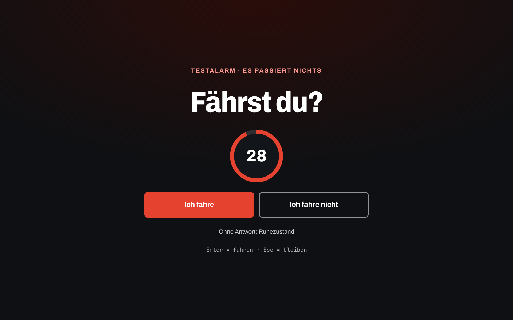
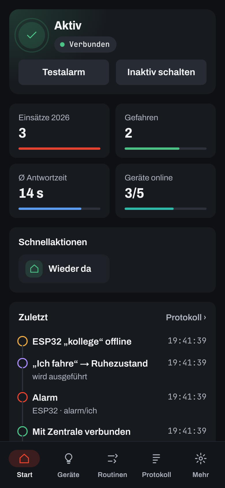
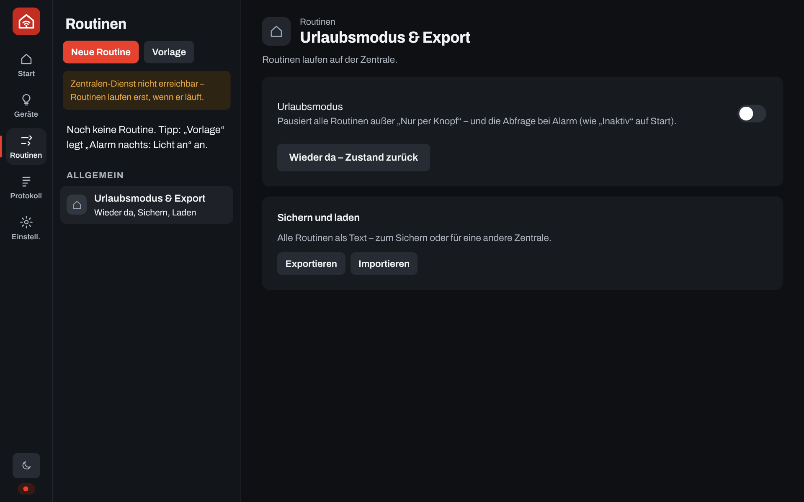
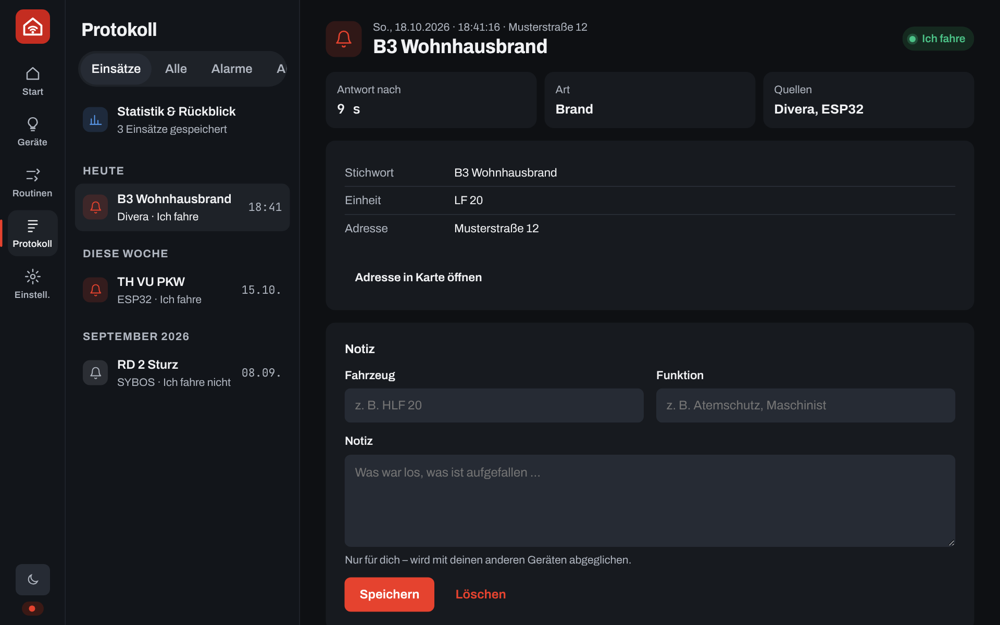
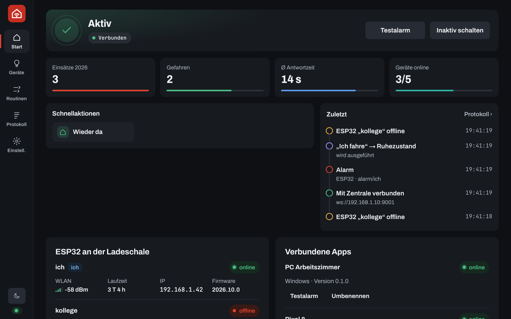
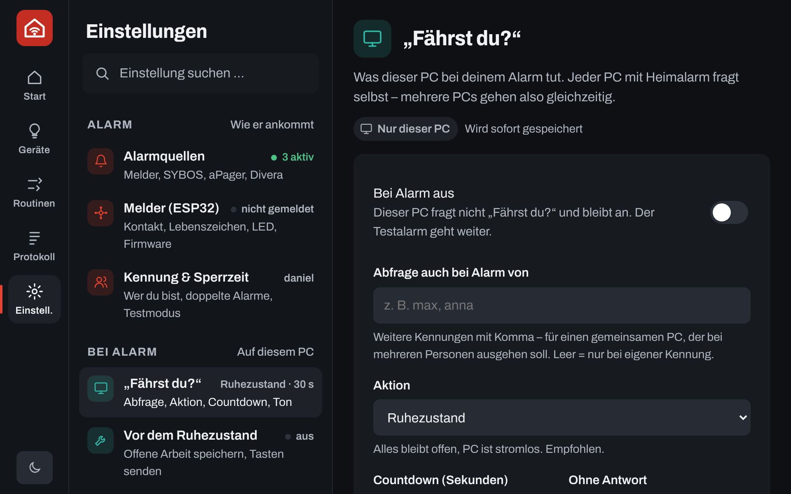
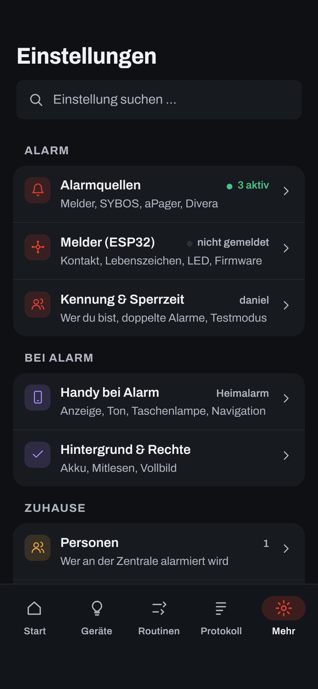

Was die App macht, aus welchen Teilen sie besteht und was bei einem Alarm der Reihe nach passiert – ohne Technik-Deutsch.
Heimalarm gibt einen Einsatz-Alarm zuhause weiter – an den PC, ans Handy und an Licht und Sprachassistenten. Für Feuerwehr, Rettungsdienst, Wasserwacht und Katastrophenschutz.
Ein großes Fenster fragt „Fährst du?“ – auf jedem Bildschirm. Danach geht der PC in den Ruhezustand, nichts geht verloren.
Liest die Alarm-App mit, zeigt den Alarm groß – auch auf dem Sperrbildschirm – und schickt deine Antwort an Divera oder aPager.
Licht geht an, Alexa- oder Google-Routinen starten – nach Regeln, die du festlegst.
Heimalarm besteht aus wenigen Teilen. Nicht alle sind nötig – schon Handy und PC allein funktionieren.
Ein kleiner Mikrocontroller für wenige Euro. Er hängt am Schaltkontakt der Ladeschale und meldet nur: „Jetzt ist Alarm.“
SYBOS, aPager PRO und Divera 24/7 auf deinem Handy. Heimalarm liest ihre Meldungen mit. Divera fragt Heimalarm zusätzlich direkt ab – auch vom PC aus. aPager kann per Webhook selbst an die Zentrale oder direkt an den PC melden.
Ein Gerät, das immer läuft: NAS, Mini-PC, Raspberry Pi oder ein alter Laptop – jeder Computer, der Docker kann. Verteilt Alarme an alle Geräte und schaltet das Licht – auch wenn Handy und PC aus sind.
Programm für Windows. Startet mit dem PC, läuft unsichtbar im Hintergrund und zeigt bei Alarm das Vollbild „Fährst du?“ auf allen Bildschirmen.
App für Android. Bekommt Alarme, liest Alarm-Apps mit, klingelt auf Wunsch selbst, schickt deine Rückmeldung und kann ohne Zentrale selbst Licht schalten.
WLAN-Lampen und -Steckdosen (Shelly, Hue, WLED, Tasmota), Zigbee-Geräte über die Zentrale, Alexa und Google Home.
Du wählst einmal, wie der Alarm zu deinen Geräten kommt – unter Einstellungen › Betrieb & Koppeln. Gekoppelte Geräte übernehmen die Wahl automatisch.
Ein Gerät im Haus verteilt alles.
Das Handy gibt den Alarm per WLAN weiter.
| Was geht? | Mit Zentrale | Ohne Zentrale |
|---|---|---|
| Alarm über die Alarm-Apps | ja | ja |
| Melder in der Ladeschale (ESP32) | ja | nein |
| „Fährst du?“ am PC | ja, an allen PCs | ja, an gekoppelten PCs |
| Alarm groß am Handy, eigener Ton | ja | ja |
| Licht über WLAN-Geräte | ja | ja, schaltet das Handy |
| Zigbee-Geräte | ja | nur über eine Hue Bridge |
| Alexa-Routinen | ja (Matter oder Voice Monkey) | ja (Voice Monkey) |
| Google Home | ja (Matter) | nein |
| Matter-Geräte aus Alexa, Google & Co. steuern | ja | nein |
| Divera, aPager-Rückmeldung | ja | ja |
| Webhook, automatischer Selbsttest | ja | nein |
| „Jemand zuhause“, „Vorher-Zustand“ zurück | ja | nein |
| Funktioniert, wenn Handy und PC aus sind | ja, Licht schaltet trotzdem | nein |
So läuft ein echter Einsatz ab – vom ersten Signal bis zum Eintrag im Logbuch.
Der Melder schließt seinen Kontakt, eine Alarm-App zeigt eine Meldung, Divera meldet einen neuen Einsatz oder ein Webhook kommt an. Egal was zuerst da ist – Heimalarm reagiert sofort.
Meist kommt derselbe Alarm über mehrere Wege. Alles, was innerhalb der Sperrzeit (Standard: 60 Sekunden) für dieselbe Person eintrifft, zählt als ein Einsatz. Fehlende Infos werden ergänzt – etwa das Stichwort aus Divera zum Signal vom Melder.
Mit Zentrale geht der Alarm an alle Geräte im Haus. Ohne Zentrale schickt das Handy ihn per WLAN an jeden gekoppelten PC.
Ein Vollbild auf jedem Bildschirm mit Countdown (Standard: 30 Sekunden) und zwei großen Knöpfen: Ich fahre und Ich fahre nicht. Ein Ton läuft, auf Wunsch stoppen Musik und Videos und die Windows-Lautstärke wird angehoben.
Die App erscheint über allem, auch auf dem Sperrbildschirm, vibriert und klingelt auf Wunsch. Mit einem Tipp geht deine Antwort an Divera bzw. aPager.
Passende Routinen starten: z. B. Flurlicht an, wenn es dunkel ist. Mit Zentrale schaltet die Zentrale, ohne Zentrale das Handy.
Bei „Ich fahre“ – oder ohne Antwort, wenn so eingestellt – geht der PC in den Ruhezustand. Läuft ein Programm, das du als Ausnahme festgelegt hast, wird er nur gesperrt. Bei „Ich fahre nicht“ passiert nichts.
Zeit, Stichwort, Einheiten, Adresse, Text, Quellen, deine Antwort und wie schnell du geantwortet hast. Später kannst du Fahrzeug, Funktion und eine Notiz ergänzen.
Mit Zentrale stellt „Wieder da“ das Licht so zurück, wie es vor dem Alarm war. Ein Rückalarm über aPager wird am Einsatz vermerkt und als Meldung angezeigt.
„Es ist Alarm“ weiß Heimalarm schnell. Was los ist – Stichwort, Adresse, Text – liefern nur manche Quellen.
| Quelle | Was kommt an | Wie und mit welcher Einschränkung |
|---|---|---|
| Melder (ESP32) | nur „Alarm“ | Liest nur den Schaltkontakt der Ladeschale. Der Text auf dem Display des Melders kommt darüber nicht heraus. |
| Divera 24/7 | am meisten | Heimalarm fragt Divera mit deinem persönlichen Schlüssel direkt ab: Stichwort, Text, Adresse und alle weiteren Angaben des Einsatzes. Geht auch am PC, ganz ohne Handy. |
| aPager PRO – Benachrichtigung | was in der Meldung steht | Das Handy liest die Benachrichtigung mit – auch den ausgeklappten Langtext. Wie viel drinsteht, entscheidet aPager. |
| aPager PRO – Webhook | Stichwort + Einheit | aPager auf dem Handy ruft bei Alarm selbst eine Adresse auf – an die Zentrale oder direkt an den PC (dann im selben WLAN). Die Heimalarm-App muss dafür nicht laufen. Braucht das kostenpflichtige Smart-Home-Paket in aPager. Alarmtext und Adresse schickt aPager hier nie. Mehrere Einheiten werden ein Einsatz, Rückalarm wird vermerkt. |
| SYBOS | was in der Meldung steht | Für Mitglieder gibt es keine offene Schnittstelle. Es bleibt das Mitlesen der Benachrichtigung. |
Damit Heimalarm Alarm-Apps mitlesen kann, braucht die App einmalig den Zugriff auf Benachrichtigungen. Heimalarm schaut nur auf die Apps, die du einschaltest, und reagiert nur, wenn eines deiner Schlüsselwörter vorkommt (Standard: „ALARMIERUNG, Alarm, Einsatz“). Für Divera ermittelt der Knopf „Erkennen“ den richtigen App-Namen. Alles unter Einstellungen › Alarmquellen.
Der PC fragt einmal, laut und deutlich – und räumt danach für dich auf. Einstellungen unter Einstellungen › „Fährst du?“.

| Danach | Was es bedeutet |
|---|---|
| Ruhezustand empfohlen | Alles bleibt offen, der PC ist stromlos. |
| Energiesparen | Schnell wieder da, braucht etwas Strom. |
| Nur sperren | PC läuft weiter, Bildschirm gesperrt. |
| Herunterfahren | Kann an „Speichern?“-Fragen hängen. |
| Mischform | Herunterfahren, nach 2 min sonst Ruhezustand. |
| Nichts tun | Nur Abfrage und Protokoll. |
Melder-Ton oder eigener Ton (MP3, WAV, OGG, FLAC). Mit „Ton testen“ hörst du vorher, wie laut es wird – Heimalarm zeigt dazu die Windows-Lautstärke. Auf Wunsch hebt Heimalarm sie bei Alarm an und schaltet die Stummschaltung ab, danach wieder wie vorher.
Läuft der Countdown ab, wird die Aktion entweder ausgeführt oder abgebrochen – einstellbar.
Läuft z. B. eine Aufnahme oder ein Spiel, das du als Ausnahme einträgst, wird der PC nur gesperrt statt schlafen gelegt.
Ein Zeitfenster, in dem der PC gar nicht reagiert – etwa nachts bei Downloads. Musik und Videos werden vorher angehalten.
Startet mit Windows unsichtbar. Das X schließt nur das Fenster, Heimalarm bleibt als Symbol neben der Uhr – der Tooltip zeigt, ob er verbunden ist.
Jeder PC fragt selbst. Ein gemeinsamer PC kann zusätzlich für weitere Personen gelten („Abfrage auch bei Alarm von“).
Ein schlafender PC lässt sich vom Handy oder über die Zentrale wieder einschalten (Wake-on-LAN) – auch als Schnellaktion auf Start.
Windows fragt einmal nach der Firewall: „Private Netzwerke“ erlauben, sonst erreicht das Handy den PC nicht.
Das Handy ist immer dabei. Es hört mit, meldet sich und gibt deine Antwort weiter. Einstellungen unter Mehr › Handy bei Alarm.

Bei eigenem Alarm erscheint Heimalarm über allem – auch auf dem Sperrbildschirm – mit „Ich fahre“, „Ich fahre nicht“ und Vibration.
Auf Wunsch klingelt Heimalarm als Wecker – hörbar auch im Lautlos-Modus. Melder-Ton oder eigener Ton, mit „Ton testen“ und Wecker-Lautstärke.
SYBOS, aPager und Divera – auch mehrere gleichzeitig. Weitere Apps über ihren Namen.
„Ich fahre“ geht als Rückmeldung an Divera und – mit Schlüssel und Abo – an aPager. Deinen Divera-Status zeigt Start und ändert ihn mit einem Tipp.
Knöpfe auf Start für „Wieder da“, PC wecken und Routinen, die nur per Knopf laufen. Ersatz für ein Widget.
Ohne Zentrale gibt das Handy jeden Alarm an die gekoppelten PCs weiter und schaltet Licht und Alexa selbst.
Eine Routine ist ein Wenn-dann-Rezept: Wenn etwas passiert und falls bestimmte Bedingungen stimmen, dann tue Folgendes.
bei Alarm · zu einer Uhrzeit · wenn ein Gerät etwas meldet · nur per Knopf
Uhrzeit von–bis · Wochentage · hell/dunkel · jemand zuhause · Stichwort enthält · Einheit enthält. Alle müssen stimmen – oder eine reicht.
Gerät oder Gruppe schalten (an, aus, Helligkeit, Farbe) · warten · „Wieder da“ · Alexa-Routine starten
Zusätzlich möglich: Licht nach X Minuten automatisch zurück in den vorherigen Zustand, und die Routine nur für bestimmte Personen.

Shelly, Philips Hue (über die Hue Bridge), WLED und Tasmota. Funktionieren mit und ohne Zentrale.
Lampen, Steckdosen und Sensoren mit Zigbee-Funk. Brauchen die Zentrale mit Zigbee-USB-Stick. Anlernen direkt in der App unter „Geräte“.
Die Zentrale meldet sich als Sensor, der bei Alarm „auslöst“ – Start für deine Routine dort. Umgekehrt schaltet sie Matter-Lampen aus Alexa & Co.
Kostenloser Dienst im Internet, der Alexa-Routinen auf Zuruf startet. Der einfache Weg für Alexa – auch ohne Zentrale.
Jede echte Alarmierung wird mit allem gespeichert, was bekannt ist – unter Protokoll › Einsätze.

Einsätze im Jahr und in den letzten 30 Tagen, Anteil „Ich fahre“, Einsätze nachts. Die wichtigsten stehen auch auf Start.
Einsätze je Monat und nach Art: Brand, Technische Hilfe, Rettungsdienst, Gefahrgut, Wasserrettung, Unwetter, Sonstiges.
Vergleich zum Vorjahr, typische Reaktionszeit, stärkster Monat, Wochentag und Uhrzeit, häufigste Stichworte.
Damit Handy und PC ohne Zentrale zusammenarbeiten, werden sie einmal gekoppelt. Danach halten sie sich gegenseitig auf dem gleichen Stand.
Liste aller gekoppelten Handys mit „zuletzt gesehen“, Umbenennen und Entkoppeln. Ein neuer Kopplungscode wirkt nur für neue Handys.
PCs prüfen, bearbeiten (Name, Adresse, Port, neu koppeln) und entfernen. „Jetzt abgleichen“ holt sofort den neuesten Stand.
Auf Start unter „Verbundene Apps“ siehst du alle Geräte, kannst sie umbenennen, alte entfernen und einen Testalarm an genau ein Gerät schicken.
Die Pille auf Start zeigt „Verbunden“. Antippen prüft alles neu – Zeile für Zeile, wie ein kleiner Check.
| Wird abgeglichen | Bleibt auf jedem Gerät |
|---|---|
| Betriebsart und Adresse der Zentrale | deine Kennung (wer du bist) |
| Alarm-, Meldungs- und Darstellungs-Einstellungen | Divera- und aPager-Schlüssel |
| PC-Einstellungen (Countdown, Aktion, Texte …) | App-PIN und Gerätename |
| Routinen, WLAN-Geräte, Personen (ohne Zentrale) | eigene Alarmtöne, „Auch für“, MAC-Adresse |
| Einsatz-Logbuch (wird zusammengeführt) |
Wann: beim Start, regelmäßig im Hintergrund, beim Zurückkehren in die App und kurz nach jeder Änderung. Wer zuletzt geändert hat, gewinnt. Abschaltbar unter „Dieses Gerät“.
PC und Handy haben dieselbe App mit denselben Teilen. Am PC steht das Menü als schmale Leiste links, am Handy unten.

Alles bereit. Ein Alarm löst Abfrage, Routinen und Ton aus.
Heimalarm prüft gerade Zentrale, Melder, PCs und Divera. Die Pille zeigt, was gerade drankommt.
Urlaubsmodus: verbunden, aber bei Alarm passiert nichts. Mit Aktivieren wieder an.
Darunter: Kennzahlen aus dem Logbuch, Licht & Geräte zum Schalten, Schnellaktionen und „Zuletzt“ als Zeitleiste. Rote Pille „Verbindung fehlgeschlagen“: antippen prüft erneut.
WLAN-, Zigbee- und Matter-Geräte: links die Liste mit Zustand, rechts das gewählte Gerät mit Reglern. Anlernen, Gruppen, Netzwerkkarte.
Wenn-dann-Rezepte anlegen, testen, ein- und ausschalten. Dazu Urlaubsmodus, Sichern und Laden.
Einsätze mit allen Infos und Statistik, dazu alles, was passiert ist, und das Protokoll der Zentrale.
Am Handy „Mehr“. Bereiche links, rechts immer nur eine Seite – siehe nächste Seite.
Statt einer langen Liste: fünf Gruppen nach der Frage, um die es geht. Jeder Bereich sagt, was drinsteht, und rechts, wie es gerade steht – gelb, wo etwas fehlt. Oben auf jeder Seite steht, für wen sie gilt. Die Suche findet jede einzelne Einstellung.


| Bereich | Was drin ist |
|---|---|
| {{i:bell}}Alarm | Alarmquellen (Melder, SYBOS, aPager, Divera mit Schlüssel, Rückmeldung, Status), Melder (ESP32) (Kontakt, Lebenszeichen, LED, Firmware), Kennung & Sperrzeit (Testmodus). |
| {{i:pc}}Bei Alarm | PC: „Fährst du?“ (Aktion, Countdown, Ton, Ausnahmen, Ruhezeit, Autostart, Aufwecken), Vor dem Ruhezustand, Discord. Handy: Handy bei Alarm (Anzeige, Ton, Taschenlampe, Navigation), Hintergrund & Rechte. |
| {{i:people}}Zuhause | Personen im Haushalt, Alexa, Google & HA (Voice Monkey, Matter, Home Assistant). |
| {{i:net}}Verbindung | Betrieb & Koppeln (mit oder ohne Zentrale), Zentrale (Adresse, Passwort, Standort, Webhook). |
| {{i:paint}}App | Dieser PC / Dieses Handy (Name, Meldungen, Abgleich), Zusatzfunktionen, Sicherheit & Backup, Darstellung & Updates. Darunter: Einrichtung, Test & Diagnose. |
Alles lässt sich gefahrlos ausprobieren, bevor es ernst wird – unter Einstellungen › Test & Diagnose. Der Testalarm liegt zusätzlich auf Start.
| Test | Was er tut | Schaltet Licht? |
|---|---|---|
| Testalarm | Nur diese App zeigt die Abfrage. | nein |
| Ton testen | Spielt den gewählten Ton 4 Sekunden mit der eingestellten Lautstärke. | nein |
| Testalarm an ein Gerät | Ein bestimmtes anderes Gerät zeigt die Abfrage. | nein |
| Kontakt-Test | Zeigt live: Kontakt offen oder zu. Löst keinen Alarm aus. | nein |
| Melder-Alarm nachspielen | Wie ein echter Melder-Alarm, an alle Geräte. Läuft als Test: Licht und PC-Aktion bleiben aus. | nein |
| Generalprobe | Routinen schalten wirklich, die PC-Aktion wird nur angezeigt. | ja |
| Verbindungstest | Prüft alles, was eingerichtet ist: Zentrale, Melder, Zigbee, Divera, aPager. | nein |
| Automatischer Selbsttest | Die Zentrale prüft alle Teile und legt einen Bericht ab – Standard sonntags um 10 Uhr, unter Einstellungen › Zentrale änderbar oder abschaltbar. | nein |
Schützt Einstellungen, die für alle Geräte gelten – etwa den Webhook-Schlüssel.
PIN beim Öffnen – auf Wunsch per Fingerabdruck bzw. Windows Hello.
Nimmt nur Geräte mit Benutzer und Passwort an. Webhooks brauchen einen geheimen Schlüssel.
Jedes Handy hat einen eigenen Code. Nach 10 falschen Codes ist ein Gerät 5 Minuten gesperrt.
Divera- und aPager-Schlüssel verlassen das Gerät nie und werden nicht abgeglichen.
Einstellungen sichern und übertragen. Schlüssel nur, wenn du es einschaltest.
PC und Handy prüfen beim Start und alle 6 Stunden auf neue Versionen. Installieren lädt, prüft und installiert – am Handy fragt Android einmal nach der Erlaubnis.
Ehrlich aufgelistet – damit du entscheiden kannst, was geändert oder ergänzt werden soll.
| Heimalarm selbst | kostenlos |
| ESP32 für den Melder | wenige Euro, einmalig |
| Zentrale | vorhandener Computer, der immer läuft (NAS, Mini-PC, Raspberry Pi, alter Laptop); Zigbee-Stick optional |
| Divera-Abfrage | über deinen bestehenden Divera-Zugang |
| aPager-Rückmeldung und -Webhook | kostenpflichtiges Smart-Home-Paket in aPager PRO |
| Voice Monkey (Alexa) | kostenloses Konto |
Die Wörter, die in der App und in diesem Dokument vorkommen.
Geräte halten Einstellungen und Logbuch auf dem gleichen Stand. Wer zuletzt geändert hat, gewinnt.
Zustand auf Start. Inaktiv = Urlaubsmodus: verbunden, aber bei Alarm passiert nichts.
Schützt Einstellungen, die für alle Geräte gelten.
Erlaubnis, dass Android die App nicht zum Stromsparen beendet.
Ein Weg, über den ein Alarm ankommt: Melder, SYBOS, aPager, Divera, Webhook.
Mit Zentrale oder ohne Zentrale (Handy und PC direkt).
Liste aller echten Einsätze mit allen Infos, Notizen und Statistik.
Kleiner Mikrocontroller, der den Schaltkontakt der Ladeschale liest und „Alarm“ meldet.
Vollbild-Abfrage mit Countdown und zwei Knöpfen – am PC auf allen Bildschirmen, am Handy über dem Sperrbildschirm.
Handy und PC kennen sich und dürfen sich Alarme und Einstellungen schicken.
Dein Kürzel im System, z. B. „ich“ oder „daniel“. Damit weiß jedes Gerät, für wen ein Alarm ist.
Probelauf, bei dem Routinen wirklich schalten, der PC aber wach bleibt.
Gemeinsame Sprache für Smart-Home-Geräte. Darüber sprechen Alexa und Google mit der Zentrale – und die Zentrale schaltet Matter-Lampen und -Steckdosen.
Wenn-dann-Rezept: Auslöser, Bedingungen, Aktionen.
Der Einsatz wird zurückgenommen. Heimalarm vermerkt ihn am Einsatz.
PC speichert alles und schaltet sich stromlos ab. Beim Einschalten ist alles wie vorher.
Zeitfenster (Standard 60 s), in dem weitere Signale als derselbe Einsatz gelten.
Kostenloser Internetdienst, der Alexa-Routinen auf Zuruf startet.
Eine Adresse, die eine andere App aufruft, um „Alarm!“ zu melden – z. B. aPager an die Zentrale.
Stellt nach dem Einsatz das Licht so zurück, wie es vorher war.
Immer laufender Computer, der Alarme verteilt und Routinen ausführt.
Funk für Smart-Home-Geräte. Braucht die Zentrale mit USB-Stick.